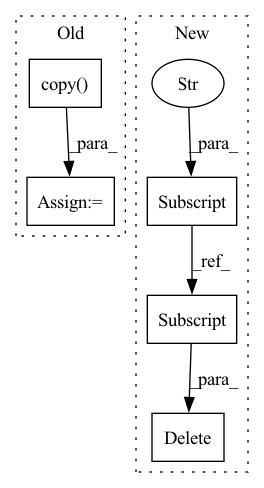

Pattern ID :3612
Before Change
@pytest.fixture
def mock_fsspec():
original_registry = fsspec.registry.copy()
fsspec.register_implementation("mock", DummyTestFS, clobber=True)
yield
fsspec.registry = original_registry
def _readd_double_slash_removed_by_path(path_as_posix: str) -> str:After Change
@pytest.fixture
def mock_fsspec():
_fsspec_registry["mock"] = DummyTestFS
yield
del _fsspec_registry["mock"]
def _readd_double_slash_removed_by_path(path_as_posix: str) -> str:
Path(...) on an url path like zip://file.txt::http://host.com/data.zipIn pattern: SUPERPATTERN
Frequency: 3
Non-data size: 5
Instances Fragment ID: 13655540
Project Name: huggingface/datasets
Commit Name: f9c770bb1a43fa7fe390286d7535266d3964d067
Time: 2023-04-13
Author: 8515462+albertvillanova@users.noreply.github.com
File Name: tests/test_streaming_download_manager.py
M Class Name: AnonimousClass
N Class Name: AnonimousClass
M Method Name: mock_fsspec(0)
N Method Name: mock_fsspec(0)
M Parent Class:
N Parent Class:
M File Name: tests/test_streaming_download_manager.py
N File Name: tests/test_streaming_download_manager.py
M Start Line: 133
M End Line: 136
N Start Line: 133
N End Line: 135
Before Change
def _train_with_config(
self, estimator, config_w_resource, sample_size=None
):
config = config_w_resource.copy()
if "FLAML_sample_size" in config:
if not sample_size:
sample_size = config["FLAML_sample_size"]
del config["FLAML_sample_size"]After Change
if "FLAML_sample_size" in config:
del config["FLAML_sample_size"]
if "learner" in config:
del config["learner"]
assert sample_size is not None
sampled_X_train, sampled_y_train, sampled_weight, groups = \
self._prepare_sample_train_data(sample_size)
if sampled_weight is not None: Fragment ID: 13655542
Project Name: microsoft/flaml
Commit Name: 6ab0730793f42ff5bb7f53b3a9d43d640e597189
Time: 2021-09-01
Author: wang.chi@microsoft.com
File Name: flaml/automl.py
M Class Name: AutoMLState
N Class Name: AutoMLState
M Method Name: _train_with_config(4)
N Method Name: _train_with_config(4)
M Parent Class:
N Parent Class:
M File Name: flaml/automl.py
N File Name: flaml/automl.py
M Start Line: 219
M End Line: 223
N Start Line: 227
N End Line: 244
Before Change
@pytest.fixture
def mock_fsspec():
original_registry = fsspec.registry.copy()
fsspec.register_implementation("mock", MockFileSystem, clobber=True)
fsspec.register_implementation("tmp", TmpDirFileSystem, clobber=True)
yield
fsspec.registry = original_registry
@pytest.fixtureAfter Change
_fsspec_registry["mock"] = MockFileSystem
_fsspec_registry["tmp"] = TmpDirFileSystem
yield
del _fsspec_registry["mock"]
del _fsspec_registry["tmp"]
@pytest.fixture Fragment ID: 13655543
Project Name: huggingface/datasets
Commit Name: f9c770bb1a43fa7fe390286d7535266d3964d067
Time: 2023-04-13
Author: 8515462+albertvillanova@users.noreply.github.com
File Name: tests/fixtures/fsspec.py
M Class Name: AnonimousClass
N Class Name: AnonimousClass
M Method Name: mock_fsspec(0)
N Method Name: mock_fsspec(0)
M Parent Class:
N Parent Class:
M File Name: tests/fixtures/fsspec.py
N File Name: tests/fixtures/fsspec.py
M Start Line: 95
M End Line: 99
N Start Line: 95
N End Line: 99
Before Change
@pytest.fixture
def mock_fsspec():
original_registry = fsspec.registry.copy()
fsspec.register_implementation("mock", DummyTestFS, clobber=True)
yield
fsspec.registry = original_registry
def _readd_double_slash_removed_by_path(path_as_posix: str) -> str:After Change
def mock_fsspec():
_fsspec_registry["mock"] = DummyTestFS
yield
del _fsspec_registry["mock"]
def _readd_double_slash_removed_by_path(path_as_posix: str) -> str:
Path(...) on an url path like zip://file.txt::http://host.com/data.zip Fragment ID: 13655551
Project Name: huggingface/datasets
Commit Name: f9c770bb1a43fa7fe390286d7535266d3964d067
Time: 2023-04-13
Author: 8515462+albertvillanova@users.noreply.github.com
File Name: tests/test_streaming_download_manager.py
M Class Name: AnonimousClass
N Class Name: AnonimousClass
M Method Name: mock_fsspec(0)
N Method Name: mock_fsspec(0)
M Parent Class:
N Parent Class:
M File Name: tests/test_streaming_download_manager.py
N File Name: tests/test_streaming_download_manager.py
M Start Line: 133
M End Line: 136
N Start Line: 133
N End Line: 135